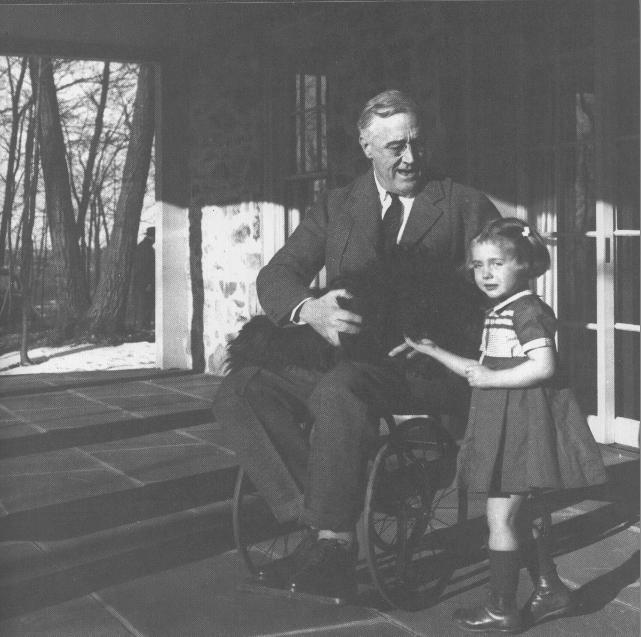

Rare photo of FDR in his weelchair
rotten.com

Franklin Delano Roosevelt photographed in his wheelchair. There are only a handful of such photos, since the press did not want to depict the president as a weak man.